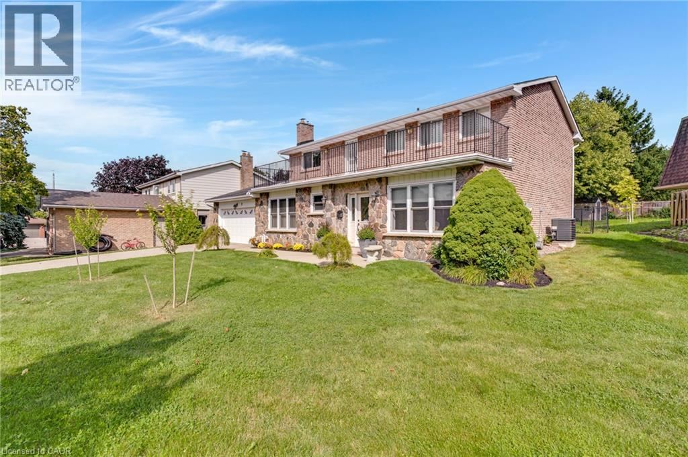
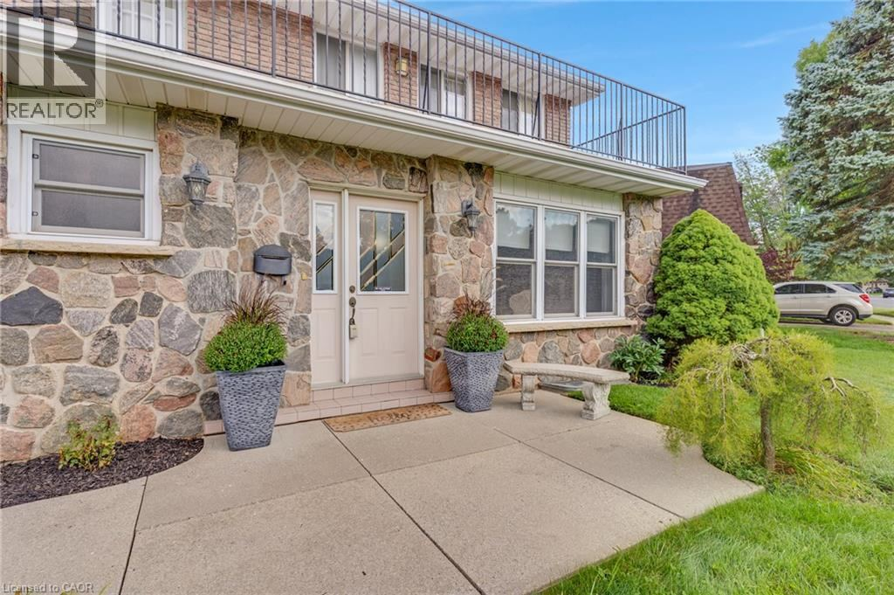
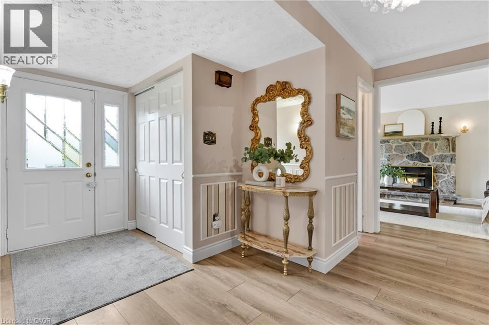
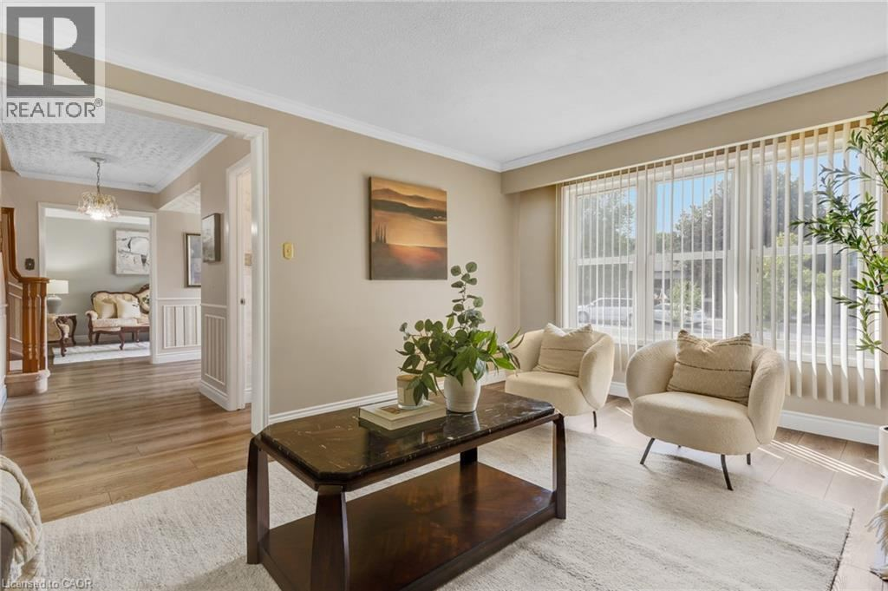
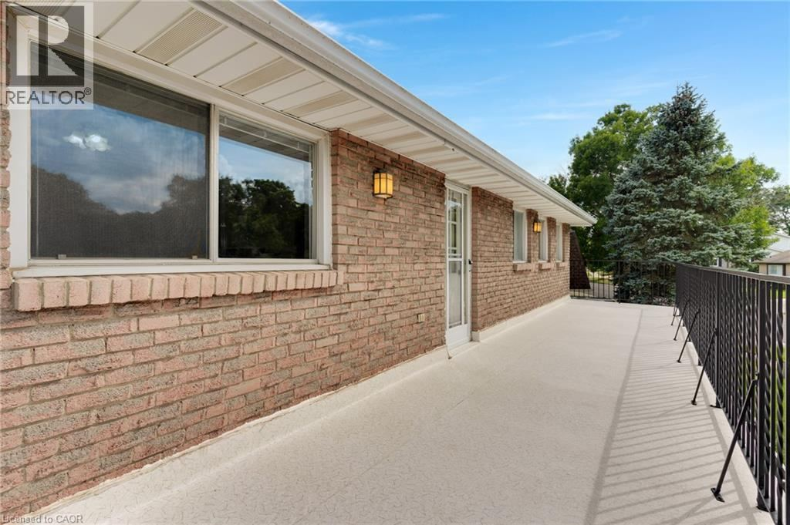
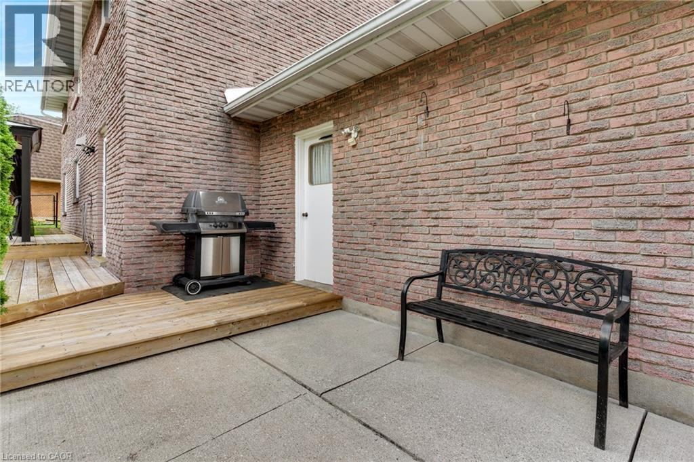

8 Blue Spruce Court
Kitchener, ON N2N 1L1 · Forest Heights · MLS® 40872351
$799,000
4Bedrooms
3Bathrooms
3,235Sq Ft Finished
101×123Lot (ft)
1976Built
6Parking
Home Highlights
- Over 3,200 sq ft finished: 2,130 sq ft above grade + 1,105 sq ft finished basement
- Generous 101 × 123 ft lot in desirable Forest Heights
- Living room, separate family room, formal dining room and eat-in kitchen
- Main-floor laundry and generous garage storage
- Primary bedroom with its own ensuite, plus three more well-sized bedrooms
- Fully finished basement with a large 36'3" × 28'8" recreation room
- Private deck and patio overlooking a fully fenced backyard
- Attached garage and driveway parking for up to four vehicles
- Close to schools, parks, shopping, transit, highway access and hospital






Nik Poulimenos, Broker
Corcoran Horizon Realty
618 King Street West, Unit B, Kitchener, ON N2G 1C8
Cell 519-503-0442 · nik@corcoranhorizon.com
www.corcoranhorizon.com
Corcoran Horizon Realty
618 King Street West, Unit B, Kitchener, ON N2G 1C8
Cell 519-503-0442 · nik@corcoranhorizon.com
www.corcoranhorizon.com